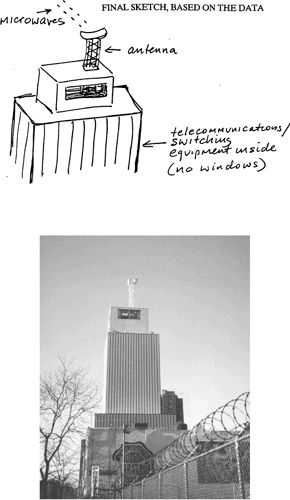

During a fever after another childhood illness, the boy [Nabokov] experienced a rush of clairvoyance: in bed, he saw his mother taking a sleigh to the Nevsky and watched her enter a store to buy a pencil that was then wrapped and taken out to the sleigh by the footman. He could not understand why she did not carry something as small as a pencil herself—until she stepped out of his vision and through his bedroom door, bearing a four-foot-long Faber display pencil she thought he might have coveted.
—Brian Boyd, Vladimir Nabokov: The Russian Years
BY THE CLOSE OF THE CARTER ADMINISTRATION THE SRI PROGRAM was reaching its peak. Operational targets flowed in, remote-viewing data flowed out, and operations-oriented experiments continued.
These experiments were by now increasingly esoteric. There were tests to see how accurately remote viewers could pinpoint events in time. Ingo Swann, for example, was once given the coordinates of a facility at a U.S. Air Force base, and was told that a rocket motor would be test-fired at the facility sometime during a particular half-hour period. His job was to determine when the event began.
“Wow!” he said at one point, sitting up in his chair in the remote-viewing room. “I think it happened a few seconds ago.” He was right. A similar test was run against a planned underground nuclear explosion at a U.S. government facility in Nevada. Swann’s job in this case was to determine if the test had occurred at all, in a given time window. The blast happened, and Swann detected it.
There were studies of precognitive remote viewing, in which the chances of a given target’s being selected by a computer were varied. Thus target one might have a 67 percent chance of being selected, and target two, 33 percent—or target one, 99 percent and target two, 1 percent. Puthoff and his colleagues wanted to know whether a remote viewer would be equally good at precognizing each target or whether the rarer targets—like unexpected events in real life—would be harder to foresee even with psi. (The data suggested that remote viewers tended to see the probable future rather than the actual future; perhaps this explained why lottery numbers and other low-probability targets were so hard to precognize.)
There were long-distance outbound remote-viewing experiments, spanning thousands of miles. There were simulations in which remote viewers tried to find kidnap victims or bombs hidden by terrorists. Much work was done against technical targets—nuclear power plants, aircraft-manufacturing facilities, and so forth—to tune the remote viewers’ minds to the subtleties of military technologies.
The remote viewers’ minds themselves were the subjects of study. As in the early days of the CIA-sponsored research, the viewers were given numerous standard and experimental personality tests that analyzed their thinking habits, their mood ranges and belief systems, their responses to stress, and other variables. They were given neurological tests, were wired to electroencephalographs, and even travelled to Los Alamos National Laboratory for deep brain-wave scans with superconducting magnetoencephalographs.
Puthoff and his government clients sought the region of the brain where psi functioning originated. The temporal lobes seemed to be involved, but as with so much of neuroscience, it was hard to penetrate the mystery much further.
There were tests of Joe McMoneagle’s out-of-body experiences, in which the Army remote viewer was asked to lie down and travel astrally along a hallway and into a locked room, later to describe the target Puthoff had placed there. Puthoff had to give McMoneagle directions to the target room beforehand, so his astral body wouldn’t lose its way.
During one remote-viewing experiment with McMoneagle, a computer near the viewing room suddenly crashed. McMoneagle was asked to try to crash the computer again deliberately. Unfortunately most of his psycho-kinetic successes (if they were not coincidences) were inadvertent. But Puthoff and Targ would obliquely refer to such incidents in a paper they presented at an American Association for the Advancement of Science meeting in 1979, noting the existence of “low-level perturbation of equipment observable during remote-viewing.”
In the early 1980s there was even a study of the possible connection between remote-viewing success and the state of the Earth’s magnetic field. This all began after Puthoff read a paper by Michael Persinger, an experimental psychologist at Laurentian University in Ontario.
Persinger, following Russian researchers like Kogan and Vasiliev, suspected that psi was at least mediated by extremely-low-frequency (ELF) electromagnetic radiation. In one of his forays in search of evidence for this, he had collected from the parapsychological literature the dates of hundreds of reported spontaneous ESP experiences. Then he had tried to find correlations between these data and several other variables, including the activity of the Earth’s magnetic field, which was known to fluctuate from day to day. He came up with a moderate correlation showing that ESP experiences tended to happen more often on days of quiet magnetic activity; this suggested in turn that intense magnetic storms could somehow interfere with psi. Persinger’s finding seemed to support the ELF theory since magnetic “noise” in the atmosphere, in the ELF range, would naturally make it more difficult for psi-type ELF signals to be detected and processed by a remote viewer’s brain. It would be like trying to listen to a weak AM radio station during a thunderstorm.
On the other hand, as Puthoff and others who disagreed with the ELF theory reasoned, magnetic noise in the atmosphere might interfere with psi in some other way, perhaps by causing subtle changes in remote viewers’ brains, making it more difficult for them to access their psi function and perhaps other more prosaic functions as well.
In any case, Puthoff and his colleagues decided to investigate the magnetic field link themselves. If geomagnetic storms interfered with psi, for whatever reason, then they should be taken into account, especially for operational remote viewing. Puthoff ended up building his own geomagnetic field meter, with the help of a former Stanford University researcher, Marcia Adams, who had done similar work building low-frequency receivers for the Army. The literature suggested, oddly enough, that trees made very good and obviously very cheap ELF antennas, so Puthoff and Adams hooked a small ELF signal amplifier to a big oak tree outside their building at SRI and then ran the receiver output into a computer, which produced ELF field readings every minute.
In the end they found, as Persinger had, a correlation between low geomagnetic activity in the ELF range and successful psi experiments. But though parapsychologists would become considerably excited by such geomagnetic data over the next decade, Puthoff considered it too small a correlation to bother about, and neither proton showers nor X-ray flares nor full-blown geomagnetic storms kept SRFs psychics from their appointed rounds through time and space.
As it had been almost from the beginning, a separate category of experimentation at SRI was reserved for the attempted replication of Soviet, East European, and Chinese research. In 1982 Puthoff heard about an odd Chinese experiment that worked as follows: A series of Chinese characters written on rice paper was placed on top of a strip of highly sensitive film. Electro-optical detectors were also focussed on the characters and the film, to independently detect any bursts of light. The entire apparatus was sealed inside a light-tight box. Then a psychic (or an “EHBF subject,” since some Chinese researchers termed psi an “extraordinary human biological function”) was asked to remote-view the characters on the rice paper inside the box. When the psychic began to remote-view, the Chinese experimenters claimed, the detectors inside the box began to register substantial light pulses in visible and infrared frequencies, while the sensitive film, when taken out and developed, was exposed in the shape of the Chinese characters—but only for those characters that the psychic had correctly remote-viewed!
This connection between remote viewing and remote physical effects was an attractive idea for Puthoff. In the very first psi experiment he had run while at SRI, he had asked Ingo Swann to affect the output of the Stanford magnetometer, and Swann had seemed to do so only when he was trying to remote-view its insides. Then there had been the computer crashes during RV experiments with McMoneagle.
Puthoff and his colleagues tried their best to replicate what the Chinese said they had done. Using double-blind procedures, they placed randomly selected photographic transparencies of target sites in front of a sensitive photomultiplier tube, then asked remote viewers to try to visualize the sites from another room. Calculating the accuracy and reliability of the remote-viewing sessions, they then tried to find correlations between these and any light pulses recorded by the photomultiplier. They did find a significant correlation, but unfortunately it was much weaker than what the Chinese had found, and they noted that the photomultiplier recorded transient pulses all the time, regardless of whether a remote viewer was operating nearby. The results, in short, didn’t seem to justify further experimentation along these lines.
Ingo Swann kept himself apart from most of these experiments, believing that his own work was the most urgent and important. He saw as his primary task the development of a more accurate and reliable remote-viewing technique. Jack Vorona and General Ed Thompson and others in the intelligence community were already impressed by what remote viewing seemed able to accomplish, but they saw much room for improvement.
It had long been clear to everyone involved in the program that the main problem with remote viewing—really, the main problem with all forms of extrasensory perception—was a signal-to-noise problem. The “signal,” meaning accurate target-related information, was too sparse, too weak, and too inconsistent. The “noise,” meaning imagination and whatever else was unrelated to the target, was too great. It really was like listening to a weak AM radio in the middle of a thunderstorm, except that with remote viewing, the distortions of the signal were even worse. Hal Puthoff had calculated in the late 1970s that on average only about two-thirds of ordinary remote-viewing data—whether coordinate remote viewing, extended remote viewing, or outbound RV—were clearly and usefully related to the target. The rest could be considered noise. Others found those figures optimistic. On occasion, of course, a remote-viewing session unrolled with breathtaking clarity and accuracy. But one knew this only in hindsight. Even with the use of calibration sessions fore and aft of an operational session, it was difficult to know how much, if any, of a viewer’s data could be trusted.*
To remedy this, it was thought, one had either to boost the psi signal or to reduce the noise. One could, for example, run different viewers against the same target, until the consistencies in their data—presumably the signal—stood clearly above the inconsistent “noise.” One also could try to tap more directly into the signal, by having the remote viewer descend into a deep altered state, or by using “autonomic,” subconscious-driven sketches of targets rather than verbal reports.
Some experimenters tried to boost the signal at an even deeper level. Anecdotal reports suggested that ESP often worked better when the target was a living thing that was undergoing some kind of dramatic, stressful event. Tales of the mother who clairvoyantly sees her son’s death in battle were practically a cliché within the parapsychological lore. Soviet researchers took this logic to its experimental extreme, by inflicting fatal trauma on baby rabbits and other small animals, and then looking for a psi response in the brains of their mothers.
Other techniques focussed on reducing the noise—for example, the visualization ritual that many of the Fort Meade viewers used, in which they imagined locking up all their cares in suitcases. The Soviets apparently also experimented with drugs or other altered-state techniques in an effort to quiet the non-psi activities of the brain.
By the late 1970s Swann had decided that he wanted to pursue neither the signal-boost nor the noise-reduction approach, at least not in their usual forms. What he wanted to do instead, first and foremost, was to teach the viewer how to distinguish, consciously, between signal and noise.
One could usually organize the information generated in a remote-viewing session along a spectrum with two extremes. At one extreme was what one might call “raw” data, in the form of very rough, unlabeled sketches of the target site, and basic, disconnected verbal descriptions such as “dry,” “steep,” “sharp,” “low throbbing sound,” and so on. At the other end lay more analytical, inductive, information-packed data, such as detailed drawings of target objects and precise verbal descriptions: “tennis court,” “nuclear reactor,” “looks like it could be Hoover Tower.”
Puthoff’s wife, Adrienne, a schoolteacher who was well read in the psychology of learning, had examined some of the remote-viewing data her husband had been bringing home since the early 1970s. She had noted that the more complex and analytical data, though they occasionally amounted to an exact description of the target, were more often simply wrong. Richard Bach’s description of a Methodist church as an airline ticket counter and a gold cross on the wall as “the logo of the company … like a big gold fleur-de-lis” was a classic example. In fact, users of remote-viewing data, such as the CIA’s Norm Everheart, had already learned to treat the remote viewers’ own analyses of their data with considerable skepticism.
It eventually became clear that others who had experimented with RV-type extrasensory perception in the past had noticed its proneness to this type of error. A good example was the writer Upton Sinclair, a part-time psi enthusiast who had experimented in the 1920s with his wife, Mary Craig Sinclair, and other apparently talented psychics. In his book Mental Radio, Sinclair noted of “Craig”:
Frequently she will make a good drawing of an object, but name it badly.… I drew a hoe [as a target], and she got the shape of it, but wrote: “May be scissors, may be spectacles with long stems to ears.”
Also in the same series [were] reindeer horns, which she calls “holly leaves.” It is psychologically interesting to note that reindeers and holly leaves were both associated with Christmas in Craig’s childhood.
To Puthoff’s wife, Adrienne, such observations were indeed psychologically interesting. She knew that the left cortex of the brain, very roughly speaking, tends to specialize in verbal, mathematical, and analytical data. It therefore seemed clear to her that remote viewing, which was seldom accurate or complete for alphanumeric or analytical information, primarily involved other, more primitive parts of the brain, such as those that specialize in visual, spatial, and basic sensory data.
Neuroscientists and psychologists whom Hal Puthoff consulted on the RV program backed up this observation. To them, a persistent failure to recognize alphanumeric data, and an inability to put accurate labels on drawings that were otherwise correct, were typical characteristics of patients with left-hemispheric damage—i.e., those who were forced, like remote viewers, into using other parts of their brains.*
But there was another aspect to all this. When a remote viewer mis-described a target—for example, as “a holly tree” when it was actually a pair of antlers—there was often something meaningful about the error. “Holly tree” and “antler” both were linked not only by their overall tree-like form—their Gestalt, as Swann called it*—but also by their conceptual connection to Christmas. It was as if the psi data drifting up from somewhere in the remote viewer’s brain were so sketchy that only the most basic perceptions and associations could be drawn from it. Mary Craig Sinclair’s brain, straining to come up with a match between incomplete data (tree-like, Christmas-related) and objects stored in memory, had settled on “holly tree.” It was close, but not close enough.
Swann and Puthoff incorporated these ideas into their evolving theory of remote viewing. As Swann put it in an internal SRI memorandum around this time, “It seems reasonable to assume that we are dealing with automatic analytical functions of some sort, and that, hypothetically, these are the source of the diluted or erroneous response.” In other words, the associations generated by the brain in its attempt to make sense of the trickle of remote-viewing data constituted some, if not all, of the “noise.” Swann, a great lover of neologisms, termed this noise analytical overlay—Aol for short—and set out to find ways of identifying it during a session. If he succeeded, then most, if not all, noisy data could simply be labeled as such, marked with the symbol Aol and treated accordingly.
Puthoff was confident that this was the right approach, and he even included a short essay by Swann in a then-classified report to his CIA sponsors in 1975. The essay read in part: “Enough data about this [signal-to-noise] difficulty has been gathered to establish that it is not necessarily a perceptual problem but in all probability [is] a process problem concerned with converting the signal of the psi-field matrix into a correct analytical sequence.… [C]ould the process difficulties be resolved, then the analytical overlay would convert into a positive adjunct of the conversion process, rather than working against it.” It was an example of the difficult, academic-sounding prose for which Swann would become known, but the process he had in mind was essentially simple. He would structure remote-viewing sessions in such a way that more analytical information would be ignored at the beginning, when it was most likely to be wrong, but would be taken into account later, when it was more likely to be right. In other words, he would teach the brain the correct way to process psi.
Around this time Hal Puthoff went to a parapsychology conference and listened to a paper read by a young British graduate student named Serena Roney-Dougal. Roney-Dougal’s thesis adviser was a well-known psychologist, Norman Dixon, who had written a recent book on the phenomenon of subliminal perception. Roney-Dougal argued in her paper that ESP was a bit like subliminal perception. Puthoff recognized this as a major insight, and brought it back to SRI with him.
Subliminal perception was so called because it described perception that took place below (“sub-”) the “limen,” the lower threshold of consciousness. All mental activities—the remembering of a face, the tasting of chocolate, the hearing of distant thunder, the fearing of tomorrow—had to have a certain strength and duration to rise above the liminal threshold and produce a conscious perception. Those that fell below tended to manifest in less direct ways. For example, if a young man were given a fraction of a second exposure to a photograph of a beautiful nude woman, he might have no conscious understanding of what he had seen, yet at the same time, according to biomedical measurements, he might display various unambiguous signs of sexual arousal. Another example is probably more familiar: If a subject were shown a subliminally brief film clip of a person drinking a bottle of Coke, she might suddenly experience —not knowing why—an urge to get something to drink. Concerns over the use of these techniques by advertisers, for example within films at the cinema, led to a brief public scare over “subliminal seduction” in the mid-1970s.
In any case, Puthoff and Swann and the others at SRI began to notice now that remote-viewing data resembled the kinds of data generated by test subjects who had been exposed to subliminal stimuli. They did freehand, autonomous sketches that they often were unable to label accurately. They reported very rough sense perceptions and emotions such as “red” or “makes me sad.” They gave out error-prone high-level descriptions—“like a gold fleur-delis”—as their minds desperately tried to make analytical sense of the subliminally faint stimulus.
It became clear to Puthoff and the others that remote viewing was largely a form of subliminal perception. How psi information came into the brain in the first place was still unknown, but it seemed to come in tenuously, in fragments, as if the remote viewer were continually being transported to his target, alighting there for the briefest of moments, and then being hauled back again. It began to seem that the remote-viewing faculty was like any other sensory faculty—taste, smell, touch, sight, hearing—only much, much weaker, unable in ordinary circumstances to make it across the liminal threshold. This implied that, short of some revolution in our understanding of the mind and our ability to manipulate it, remote-viewing perception would always be extremely noise-prone for most people. There was really no way to get rid of the noise; one could only try to recognize it and separate it from the signal. And that was precisely what Ingo Swann hoped to do.
Puthoff and Swann eventually showed some of their remote-viewing data to Norman Dixon, and he was so impressed by the apparent link between RV and subliminal perception that he wrote a short paper on the subject for a parapsychology journal, a paper that, of course, his colleagues in academic psychology ignored completely.
By 1980 Swann had begun to develop a remote-viewing technique that would separate the psi signal from noisy analytical overlay. His major insight here was to notice that when analytical overlay appeared in a remote-viewing session, it almost always did so in the form of “like a …” or “it seems to be a …” or “it reminds me of a.…” Any such qualifier, especially “like,” became to Swann a cue that analytical overlay was about to follow. In his own sessions, he began to label all such information “Aol,” afterwards immediately putting his pen down and trying to clear the presumably erroneous data from his mind. Later, in the analysis of the session, the Aol-labeled data—if it had appeared relatively early in the session—would be ignored or treated as having, at best, some kind of weak Gestalt-level association with the target.
But if the Aol data had appeared relatively late in the session, Swann might not discard them so easily. He believed that Aol data, if the session was handled properly, tended to converge on the target as the session wore on, just as a person’s analysis of a subliminal stimulus grew clearer the longer the person was exposed to the stimulus.
If the target was, say, one of the great pyramids in Egypt, initial Aols, like “skyscraper,” might be unhelpful. But later Aols, Swann believed, would tend to be more helpful: “like a tomb,” “like a tent,” “reminds me of the Nile.” It became clear to Swann that remote viewers should postpone the more information-rich Aol-type data until the end of the session and should start the session by accepting only the more raw and basic data. Swann later spoke of the psi signal, or the “signal line,” as a flow of information through an “aperture.” At the outset, the aperture was tiny and the flow was merely a trickle, but as the session wore on, the aperture widened and the trickle grew to a flood.
Remote viewing, in other words, had a natural structure. The artist from New York therefore increasingly saw himself as a psychological engineer, charged with designing a technique that would keep remote viewers rigidly within that structure. In the terminology he later deployed for his training course, a remote viewer could stay “on the signal line” only if he stayed “in structure.”
The very start of this structure Swann had no desire to change. He liked the discipline in which the viewer sat down, wrote his name on the paper, and waited silently, pen poised, for coordinates to be read. (Swann focussed his attention only on the coordinate technique he had devised.)
But what should the viewer do when he wrote down the coordinates? Should he begin by trying to focus on rough sense data, such as “smell of grass,” or “green,” or “quiet,” or other unhewn thoughts that poked above his liminal threshold? Or should he begin with autonomic, unlabeled sketches that channelled the visual material below the threshold? What, in short, was the most basic and Aol-free type of information to start with?
At this point Swann turned to a book by the critic and painter Rudolf Arnheim, titled Art and Visual Perception. In its discussions of the psychology of seeing, the complexification of perception as one beholds an object, and the evolution of perception and artistic skill in children, Arnheim’s classic probably served as the single greatest influence on Swann the remote-viewing engineer. Certainly it was the prime source for what Swann came to call Stage One of his remote-viewing system.
In the book Arnheim talked about subliminal and other forms of low-stimulus perception. He made the point that for an image glimpsed just briefly, only the most essential features of the image were perceived correctly. In other words, only the visual Gestalt came through; everything else was likely to be the product of the imagination.
Swann was determined that what worked for ordinary subliminal perception should work for remote viewing. He therefore decided that capturing the visual Gestalt of a given remote-viewing target should be the goal of Stage One.
In designing a method to do this, Swann took inspiration from Arnheim’s description of the way people see things. “[I]n looking at an object,” Arnheim had written, “we reach out for it. With an invisible finger we move through the space around us, go out to the distant places where things are found, touch them, scan them, scan their surfaces, trace their borders, explore their texture.” Thus, for example, to look at the columns of the Parthenon was in a very real sense to feel oneself soaring vertically up, then down, then up, then down, and so on along the row, all the time feeling the smooth hardness of the marble, and the jaggedness where time and circumstance had gnawed that smoothness away.
Observing his and others’ remote-viewing sessions, Swann decided that the kind of information Arnheim was talking about was available to a remote viewer in an almost instantaneous burst at the start of a session—in fact, the moment the coordinates had been read. But the strange thing was, this information wasn’t available in visual form so much as in an autonomic, kinesthetic form. Swann would feel his writing hand making motions to describe the basic feature of a target—say, a rapid diagonal up, diagonal down for a mountain—just as his eyes might have scanned their way around the target had he been seeing it in real life. Swann’s hand seemed to want to sketch this information automatically; in some cases, as Hal Puthoff pointed out to him, Swann even doodled with his pen in the air, above the paper.
As he experimented with these initial sketches—which usually took only a second or two—Swann decided that they did often contain the basic visual and kinesthetic elements of the targets he was after. If the target was a mountain, the initial sketch was often like an inverted V. If the target was a place in the desert, the sketch tended to consist mainly of flat lines. If it was a building, the sketch might contain right angles, which rarely occurred in anything that was not man-made.
As his hand rapidly formed these images, Swann also tried to sense the basic kinesthetic and textural features of the target, the ups and downs, the hardness or softness. He called the images “ideograms,” and the textural-kinesthetic descriptions “feeling motion.”
Swann was, of course, simply taking Arnheim’s idea about visual perception and imposing it on remote viewing, trying to make it work. But he was convinced that it did work, and he convinced Puthoff and others at SRI.
Thereafter, as soon as a remote viewer under Swann’s tutelage wrote down the coordinates of the target site—in fact, even before he had raised his pen from the paper—the viewer would coax his hand to make a rapid sketch of whatever kinesthetic sensation occurred to his nervous system, following that with a verbal notation of the feeling motion, and perhaps an interpretation of what target Gestalt this indicated. If the target was a random place in mid-ocean, then ideally the remote viewer would rapidly sketch a flattish, wavy line, feeling a soft waviness as he did so. He would then write “wavy, soft,” interpreting this as “water.”
Swann saw this several-second burst of structured psi perception as the key to successful remote viewing—or, to use a different metaphor, as a noise-free foundation for the rest of the remote-viewing session. Swann would later rank his development of Stage One among his life’s greatest achievements.
Swann practiced with ideograms for many months. When he began a session and thought that his ideogram was incorrect, or when his pen failed to form any ideogram at all, he simply declared a “miss,” took a several-second break, and then wrote the coordinate down again, giving the kinesthetic burst from the signal line another chance to tremble through his arm and onto the paper. This might go on for several minutes, until his ideograms began to conform to a consistent shape. Once they did, and he recognized their meaning, they often shifted to something very different, describing a new aspect of the target—as if to say, “It’s time to move on.” Swann himself vocalized his thoughts during sessions, speaking every word he wrote down, and also writing down everything he spoke, believing that this would keep both halves of his brain, via his eyes and his ears, fully apprised of what was going on.
Ideograms and their interpretation formed Stage One. Stage Two came more naturally. Swann found that once he had the ideogram out of the way, basic sense perceptions would begin to surge above his liminal threshold and into consciousness: “hard,” “gray,” “roaring sound,” “white,” “steep,” “motion,” “smell of water.” If a much more complex image or word, such as “fountain,” came up, he would say out loud, “Aol break, fountain,” writing “Aol brk” and beneath it “fountain”; he would then set down his pen and take a break of a few seconds to try to clear his mind of the noisy information.
After a string of Stage Two perceptions, Swann often began to feel certain aesthetic sensations, such as “breathtaking.” Because these could sometimes come into consciousness quite strongly, generating Aol associations of their own, Swann learned to take quick aesthetic impact (Ai) breaks after them too, writing “Ai brk.”
Related to Ai’s in Swann’s scheme, but subtly different, were “emotional impacts” (Ei); these could be emotions that others actually at the site were experiencing, or would normally experience while there. Thus he might write something down such as “Ei brk, routine—I feel bored.”
After Stage Two had run for a minute or so, the data often switched to what Swann called “dimensionals”—perceptions such as “large,” “expansive,” “thick,” “heavy.” He defined this as the transition to Stage Three, and at this point the viewer often got the strong urge to start making relatively large autonomic sketches. Their meaning might not immediately—or ever—be clear, but as they progressed, sometimes for page after page, they might begin to suggest something about the target. For example, if the target was a hydroelectric dam, Swann might sketch several steeply angled lines across the page, with a line running horizontally connecting their tops, and another curved line beneath.
At this point, Aols would become more frequent, as the mind automatically tried to decide what the sketch represented. Swann might have to write down a string of Aol breaks—“Aol brk, wall,” “Aol brk, mountain slope”—discarding all such information as probable noise.
For a long time Stage Three was as far as Swann could develop his remote-viewing technique. He considered it progress, but he wanted to go much further. He realized he was still missing a technique for pulling out more complex but noise-free information from a target, information that described its function or purpose.
Such a technique formed the basis for Stage Four. After more than a year of tinkering and experimentation, Swann decided simply to write a sequence of general headings across the top of a blank sheet of paper, going from left to right, placing his pen beneath each column and prompting for the desired information. The headings covered the usual early-stage information—Stage Two sense perceptions, dimensionals, Ai’s, Ei’s, and Aols—but also now included “tangibles” and “intangibles.” Tangibles (things like “concrete,” “steel,” “machines,” “cables,” “energy”) were relatively physical, material objects at the target, while intangibles (“public,” “practical,” “necessary”) referred to associated concepts or functions. Both categories could be relatively noisy, but Swann believed that by this point in the RV session the subliminal mind would have been in intermittent contact with the signal over three stages and at least several minutes, enabling it to assemble analytical information much more accurately than at the beginning.
The prompting and vocalizing and writing would go on, across and down the page, and occasionally Swann felt the urge to break for a new sketch, then went back to start a new matrix or to finish the old one. Eventually, if all went well, the last bits of verbal and graphic information would come through, and Swann could make a final “analytical sketch” which brought together all the major elements of the target and allowed it to be identified.
An example of a four-stage CRV session follows:

target: telephone switching center, 10th Ave. and 53rd St., Manhattan.
Swann would go on to refine his remote-viewing system even further. There would be methods of prompting for detail from specific objects at a target site, which Swann would explore in Stage Five. In Stage Six Swann would move into three-dimensional representations of the object, building a clay model, and noting further insights on a “Stage Six Matrix.” In Stage Seven, he would try to dredge up the actual name of the site, taking a deep breath and uttering short “phonetics” until he began to zero in: “Vah,” “huh,” “dah,” “huh”; “vah,” “dah,” “muh”—“Hoover dam.” One or two of his students would seem to do very well at it,* although Swann himself eventually abandoned phonetics as too noise-prone.
Swann also discovered and named a couple of interesting remote-viewer pitfalls. There was the dread Aol drive, for example, which occurred when an Aol was so strong that the viewer couldn’t get it out of his head, and it ended up “driving” the rest of the data in the session. To avoid Aol drive, the viewer might have to abandon the session for a day or so, or in some cases forever.
There was peacocking, which happened when one Aol led to another in a colorful spiral away from the actual target. There was burnout and overtraining, from too much remote viewing. There was a too much break for remote viewers overwhelmed by data within a session, and there was even a confusion break for viewers who sensed that data were coming in but somehow couldn’t put them down on the page.
There was also the very strange phenomenon of “telepathic overlay.” Sometimes the remote viewer reproduced in his RV session erroneous data that some other viewer had come up with or data in the mind of the monitor. It was the kind of thing that had been reported since the early days of mesmerism and hypnosis, and there didn’t seem to be much one could do about it, aside from keeping the monitors blind to the targets in operational sessions. Unfortunately, the existence of this overlay meant that two remote-viewing sessions, by two different remote viewers, might not be as “independent” as one might suppose.
Related to telepathic overlay was the phenomenon of “remote-viewing your feedback,” in which the viewer, instead of remote-viewing the actual target described by coordinates, remote-viewed the feedback photograph in the target folder, reproducing it accurately even though it might contain elements no longer at the target site.
As destructive as these phenomena seemed, Swann and Puthoff were nevertheless satisfied that they seldom occurred, especially for experienced viewers. In any case, by the early 1980s Swann’s new technique was attracting strong interest among Grill Flame’s clients in Washington, while at SRI, Puthoff and others began to speak the new Swannian vernacular: “That was a big Aol”; “I’m in drive here”; “Whoa! That Ai blew me away”; “I’ve lost the signal line”; “I can’t get the aperture open”; “Hey, that was a great Stage Two site.”
Swann’s remote-viewing scheme might have seemed arbitrary and bizarre, but in fact many of his insights had been made before by other psi researchers, despite their absence from the modern parapsychological literature. Upton Sinclair, for example, had not only noticed what Swann called analytical overlay but had even described telepathic overlay. In Mental Radio, Sinclair wrote that his wife’s drawings “sometimes contain things which are not in [the target drawings], but which were in my mind while I was making them, or while she was ‘concentrating.’ ”
And then there was René Warcollier, a French parapsychologist who had done psi experiments back in Sinclair’s day. Sometime around 1982, Puthoff came across a secondhand English translation of a book by Warcollier, titled Mind to Mind, which had been put out just after the Second World War by an obscure and now-defunct publishing house. The book was essentially an edited version of a lecture Warcollier had given at the Sorbonne in the summer of 1946. Puthoff read through the book and was amazed to find that Warcollier, even more than Sinclair, had anticipated Swann’s observations about remote viewing.
Trained as a chemical engineer, Warcollier had made his fortune in the early part of the twentieth century with the invention, strangely enough, of a chemical process for turning fish scales into artificial jewelry. Thus funded, he had begun to experiment with telepathy in about 1909, and had continued to do so, with breaks for two world wars, for most of the rest of his life. When Puthoff finished Warcollier’s book, he sent a copy of it with a letter to Swann, who had just returned from a trip away from Menlo Park. The letter read in part:
Dear Ingo—
I believe that this is the book you’ve been waiting for. He [Warcollier] discusses everything you’ve come up with—analytical overlay (he calls it secondary elaboration); telepathic overlay (mental contagion); the fact that it is the dynamic or kinesthetic element that comes through most readily rather than the static image; drawing [is] better than words because telepathic data [are] processed at a pre-language level of organization; etc., etc. And he ties it all together on the basis of what perceptual psychologists know about the beginnings of ordinary perception in children and primitives … he is our kind of man talking our kind of language.
In the early 1980s Swann began to train others in his evolving technique, to gain insights into the workings of remote viewing, and to establish the feasibility of a formal training program that could be sold to Grill Flame managers in the DIA and the Army.
At Swann’s direction, pictures and descriptions of test targets, designed to encourage a wide range of psi perceptions, were cut from old National Geographic magazines by Martha Thompson, a young woman who served as the RV lab’s secretary. She would find the geographical coordinates of the targets on an atlas or on more precise Pentagon-provided maps. For each such target she would prepare a manila file folder with a short handwritten description of the target on the tab, and the coordinates written in large letters across the side. The viewer would start with the coordinates, and after the session was over, would get to see the pictures of the target inside the folder.
In all there were about a dozen volunteers trained by Swann at SRI from 1980 to 1982. Most were SRI employees who otherwise worked on psi-unrelated projects. A few were friends of Swann’s, hired temporarily by SRI.
Jacques Vallée was one of the trainees. Although rapidly gaining renown as a writer about UFOs, he was also a computer scientist and an SRI consultant who had done, and was still doing, some of the pioneering development of computer network technology. Vallée became enthusiastic about remote viewing and even arranged for joint RV sessions among computer network users, although he seemed to have difficulty with Swann’s scheme.
Hal Puthoff was another trainee, at least briefly. He had served as a monitor for many of Swann’s RV sessions, particularly the operational ones, and in the early 1980s, Swann’s urging and his own natural curiosity finally got the better of him. He turned out to be a reasonably good remote viewer. One training target was a waterfall in Brazil, which Puthoff, being particularly sensitive to the humid smells of the tropics, nicely sketched and described. Another target was a Union Carbide chemical plant; Puthoff sensed smoke and stacks and flames, smelled pungent chemical odors, and generated the unsurprising Aol of “oil refinery.”
Gary Langford and Hella Hammid were also trainees, and Swann made sure to give them a bizarre range of targets. In May 1980 he gave them the coordinates of the erupting Mount St. Helens, which included the perplexing sensory juxtaposition of both fire and ice. Another time a trainee was given a site and felt that it was bleak, cold, and dangerous. “Men come here, and they leave,” he noted on his session sheet. The coordinates he had been given, it turned out, were not terrestrial. They described Tranquillity Base, where the Apollo 11 astronauts had landed on the moon. Like Mount St. Helens, it was a good Stage Two site, as Swann liked to say, because its basic sensory associations were intense and dramatic.
Stage Three sites were those with obvious and distinctive features that could be sketched easily, like the tall and narrow Washington Monument or the domed Taj Mahal. Stage Four sites were those with a clearly defined purpose, something that would pop right out in the intangibles column, like “generating power.” Then there were Stage One sites. Swann in later years often told the story of a target he once gave Hella Hammid. The coordinates precisely described a precipice over the Khyber Pass, and the vertiginous kinesthetics of the site were apparently so strong that Hammid’s hand, forming the initial ideogram, went sharply down, off the paper, and off the table.
* The remote viewers at Fort Meade considered calibration sessions worthless. They noted the wide variations in accuracy that seemed to occur from one target to the next, the disabling fatigue that a pre-operational calibration session could bring about, and the fact that the prospect of an “operational” sexy target could boost (or lower) performance unpredictably.
* Remote viewers, like left-brain-damaged patients, also tended to make mistakes about “right” and “left.” The sketches and diagrams they drew were sometimes mirror images of the correct targets.
* Gestalt, from a German word for “form,” was a psychological term defined as a “perceived organized whole that is greater than the sum of its parts.”
* Joe McMoneagle was probably the best at getting names from sites, although it usually happened spontaneously, and he never learned Swann’s technique.